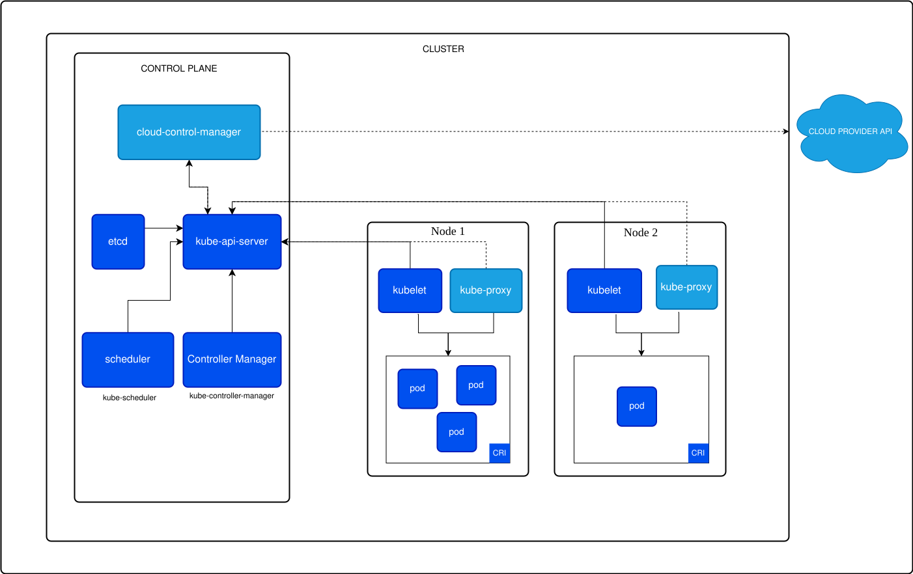

Kubernetes
在大规模集群中的各种任务之间运行，实际上存在各种各样的关系。这些关系的处理才是作业编排和管理系统最困难的地方。
过去很多集群管理项目（Yarn/Mesos）擅长将一个容器按照某种规则放置在某个最佳的节点上运行，称为调度；
Kubernetes擅长按用户的意愿和整个系统的规则，自动化处理好容器间的各种关系，称为编排。
以统一的方式抽象底层基础设施能力（如计算、网络、存储），定义任务编排的各种关系（如亲密、访问、代理关系），将抽象以声明式 API 的方式对外暴露，从而允许平台构建者基于这些抽象进一步构建自己的 PAAS 平台。
组件
官方网址：https://kubernetes.io/zh-cn/docs/concepts/overview/components/

控制平面组件（Control Plane Components）
控制平面的组件对集群做出全局决策（比如调度），以及检测和响应集群事件（例如，当不满足部署的 replicas 字段时，启动新的 pod）。
控制平面组件可以在集群中的任何节点上运行，一般而言，会部署在一个节点（称为Master节点），同时该节点不运行用户容器。
kube-apiserver
从 etcd 读取（
ListWatch）全量数据，并缓存在内存中；无状态服务，可水平扩展。
该组件公开了 Kubernetes API，支持水平伸缩，所有其他组件都通过该前端进行交互。
kube-controller-manager
运行控制器进程的控制平面组件。
从逻辑上讲，每个控制器都是一个单独的进程， 但是为了降低复杂性，它们都被编译到同一个可执行文件，并在一个进程中运行。
下面是一些示例：
- 节点控制器（Node Controller）: 负责在节点出现故障时进行通知和响应
- 任务控制器（Job controller）: 监测代表一次性任务的 Job 对象，然后创建 Pods 来运行这些任务直至完成
- 端点控制器（Endpoints Controller）: 填充端点（Endpoints）对象（即加入 Service 与 Pod之间的链接）
- 服务帐户和令牌控制器（Service Account & Token Controllers）: 为新的命名空间创建默认帐户和 API 访问令牌
kube-scheduler
进一步的知识见K8s调度器
负责监视新创建的、未指定运行节点（node）的 Pods，选择节点让 Pod 在上面运行。
调度决策考虑的因素包括单个 Pod 及 Pods 集合的资源需求、软硬件及策略约束、 亲和性及反亲和性规范、数据位置、工作负载间的干扰及最后时限。
cloud-controller-manager
云控制器管理器（Cloud Controller Manager）允许将你的集群连接到云提供商的 API 之上， 并将与该云平台交互的组件同与你的集群交互的组件分离开来。
- 基于一种插件机制来构造的， 这种机制使得不同的云厂商都能将其平台与 Kubernetes 集成。
etcd
可以使用 k8s 自身的内置的 etcd，或者配置外部的 etcd 集群。
一致且高可用的键值存储，用作 Kubernetes 所有集群数据的后台数据库。
Node 组件
节点组件在每个节点上运行，维护运行的 Pod 并提供 Kubernetes 运行环境。
kubelet
每个节点（node）上运行的代理。 它保证容器（containers）都 运行在 Pod 中。
-
接收一组通过各类机制提供的 PodSpec，确保 PodSpec 中描述的容器处于运行状态且健康。
-
kubelet 不会管理不是由 Kubernetes 创建的容器。
kube-proxy
支持 iptables 和 ipvs 模式的代理。
每个节点上运行的网络代理， 实现 Kubernetes 服务（Service） 概念的一部分。
- 可以提供固定的 VIP，将其转换为后端的 Pod 的真正 IP（IP 的路由由网络插件如 Calico 提供）。
维护节点上的网络规则，允许从集群内部或外部的网络会话与 Pod 进行网络通信。
- 如果操作系统提供了可用的数据包过滤层，则 kube-proxy 会通过它来实现网络规则。 否则，kube-proxy 仅做流量转发。
Container Runtime
容器运行环境是负责运行容器的软件。Kubernetes CRI (容器运行环境接口) 的任何实现，包括 containerd、CRI-O。
插件
插件使用 Kubernetes 资源（DaemonSet、Deployment等）实现集群功能。因为这些插件提供集群级别的功能，插件中命名空间域的资源属于 kube-system 命名空间。
下面是常用的一些插件，完整的列表见插件（Addons）。
DNS
集群 DNS 是一个 DNS 服务器，和环境中的其他 DNS 服务器一起工作，它为 Kubernetes 服务提供 DNS 记录。
Kubernetes 启动的容器自动将此 DNS 服务器包含在其 DNS 搜索列表中。
Web 界面（仪表盘）
Dashboard 是 Kubernetes 集群的通用的、基于 Web 的用户界面。 它使用户可以管理集群中运行的应用程序以及集群本身并进行故障排除。
容器资源监控
容器资源监控 将关于容器的一些常见的时间序列度量值保存到一个集中的数据库中，并提供用于浏览这些数据的界面。
集群层面日志
集群层面日志 机制负责将容器的日志数据保存到一个集中的日志存储中，该存储能够提供搜索和浏览接口。
网络插件
网络插件 是实现容器网络接口（CNI）规范的软件组件。它们负责为 Pod 分配 IP 地址，并使这些 Pod 能在集群内部相互通信。
架构
官方地址：https://kubernetes.io/zh-cn/docs/concepts/architecture/

节点
节点可以是一个虚拟机或者物理机器，取决于所在的集群配置。每个节点包含运行 Pod 所需的服务； 这些节点由控制面负责管理。
Kubernetes 会一直保存着非法节点对应的对象，并持续检查该节点是否已经变得健康。
- 必须显式地删除该 Node 对象以停止健康检查操作。
控制器
通过 Yaml 描述期望状态（Desired State），控制器通过监控集群的公共状态，并致力于将当前状态（Current State）转变为期望的状态。
控制器模式
一个控制器至少追踪一种类型的 Kubernetes 资源。这些对象有一个代表期望状态的 spec 字段。 该资源的控制器负责确保其当前状态接近期望状态。
通过 API 服务器来控制
- 内置控制器通过和集群 API 服务器交互来管理状态；如 Job 控制器不会自己运行任何的 Pod 或者容器，Job 控制器是通知 API 服务器来创建或者移除 Pod。
直接控制
- 和外部状态交互的控制器从 API 服务器获取到它想要的状态，然后直接和外部系统进行通信（对集群外的一些东西进行修改）并使当前状态更接近期望状态。
租约
分布式系统通常需要租约（Lease）；租约提供了一种机制来锁定共享资源并协调集合成员之间的活动。
租约概念表示为 coordination.k8s.io API 组中的 Lease 对象， 常用于类似节点心跳和组件级领导者选举等系统核心能力。
节点心跳
Kubernetes 使用 Lease API 将 kubelet 节点心跳传递到 Kubernetes API 服务器。
对于每个 Node，在 kube-node-lease 名字空间中都有一个具有匹配名称的 Lease 对象。
- 每个 kubelet 心跳都是对该
Lease对象的 update 请求，更新该 Lease 的spec.renewTime字段。 - Kubernetes 控制平面使用此字段的时间戳来确定此
Node的可用性。
领导者选举
使用 Lease 确保在任何给定时间某个组件只有一个实例在运行，用于Active-Standby的高可用场景。
垃圾收集
垃圾收集（Garbage Collection）是 Kubernetes 用于清理集群资源的各种机制的统称。 详见垃圾收集